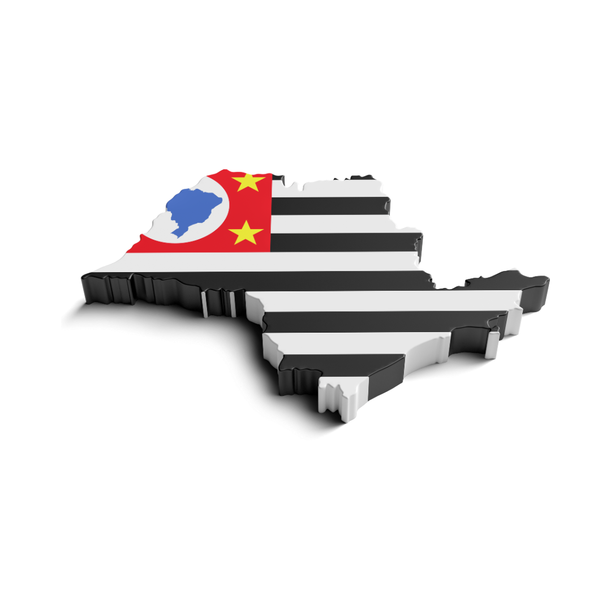

São Paulo representou 25% do PIB nacional em 2023, com 2,7 trilhões de reais.
A produção agrícola do estado somou 448 milhões de toneladas, cerca de 14% do agro nacional.


A Região Leste de São Paulo, especialmente os municípios de Mogi das Cruzes, Biritiba-Mirim, Suzano e Itaquaquecetuba, desempenha um papel crucial no abastecimento de alimentos frescos para a capital paulista e áreas metropolitanas adjacentes.
Principais Cidades e Características
- Mogi das Cruzes: Destaque no cultivo de hortaliças como alface, couve e espinafre, além de frutas como caqui e nêspera. Também é reconhecida pela produção de flores ornamentais.
- Biritiba-Mirim: Um dos maiores produtores de hortaliças do estado, com foco em alface, repolho e couve-flor. Proximidade com a capital facilita a distribuição.
- Suzano: Apesar de mais industrializada, mantém áreas agrícolas com produção de hortaliças e flores.
- Itaquaquecetuba: Agricultura limitada pela urbanização, mas ainda relevante na produção de hortaliças.
Produtos de Maior Produção
- Hortaliças: Alface, couve, espinafre, repolho e couve-flor.
- Frutas: Caqui, nêspera, morango e uva.
- Flores e Plantas Ornamentais: Produção significativa, especialmente em Mogi das Cruzes e Suzano.
Quantidade Produzida e Geração de Riqueza
A produção hortícola representa mais de 60% do valor bruto da produção agropecuária da Região Metropolitana de São Paulo. A alface sozinha responde por cerca de 25% desse valor.
Top 3 Maiores Clientes
- Mercados e Feiras Livres da Capital: Abastecimento diário graças à proximidade com São Paulo.
- Redes de Supermercados: Grandes cadeias da capital e região metropolitana são clientes regulares.
- Centrais de Abastecimento (CEASA): Facilitam a logística e distribuição ampla da produção.
Desafios e Perspectivas
A urbanização crescente reduz áreas cultiváveis. No entanto, iniciativas de agricultura urbana e periurbana vêm sendo incentivadas para manter a produção local e atender à demanda por alimentos frescos.
A Região Oeste do Estado de São Paulo é reconhecida por sua significativa contribuição ao agronegócio paulista, destacando-se na produção de culturas como cana-de-açúcar, soja e milho.
Principais Cidades e Características
- Presidente Prudente: Centro regional com forte presença na produção de cana-de-açúcar e pecuária bovina.
- Araçatuba: Destaque na produção de carne bovina e avicultura, além de ser um polo importante do setor sucroalcooleiro.
- São José do Rio Preto: Diversificação agrícola com foco em cana-de-açúcar, laranja e pecuária.
Produtos de Maior Produção
- Cana-de-açúcar: Principal cultura da região, utilizada na produção de açúcar e etanol.
- Soja: Em expansão, voltada para exportação e indústria alimentícia.
- Milho: Importante para a alimentação animal e uso industrial.
Quantidade Produzida e Geração de Riqueza
Em 2020, o valor da produção agropecuária paulista foi estimado em R$ 96,5 bilhões, sendo a cana-de-açúcar responsável por uma parcela significativa desse valor (IEA SP).
A soja apresenta crescimento contínuo e contribui de forma relevante para a economia agropecuária do estado.
O milho também se destaca, especialmente nas regiões oeste, sendo essencial para o setor de ração e agroindústria (Ciagri).
Top 3 Maiores Clientes
- Usinas Sucroalcooleiras: Destino principal da cana-de-açúcar para a produção de açúcar e etanol.
- Mercado Interno: A soja e o milho abastecem a indústria nacional de alimentos e rações.
- Mercado Externo: Parte da produção de soja é exportada para mercados internacionais.
A Região Norte do Estado de São Paulo também desempenha um papel relevante no agronegócio estadual, com destaque para o cultivo da cana-de-açúcar. Embora o município com maior participação (Murutinga do Sul) esteja geograficamente mais a leste, a região apresenta uma forte concentração dessa cultura.
Principais Cidades e Características
A topologia da região indica uma distribuição linear do cultivo de cana-de-açúcar, acompanhando a infraestrutura de transporte. Isso reflete uma adaptação produtiva às condições logísticas da região, favorecendo o escoamento da produção.
Produtos de Maior Produção
- Cana-de-açúcar: Cultura predominante, com alta produtividade e importância econômica.
Quantidade Produzida e Geração de Riqueza
Embora os dados detalhados por município não estejam totalmente disponíveis, a concentração da cana-de-açúcar na região norte é significativa. Ela representa uma parcela expressiva do valor agropecuário estadual, principalmente devido ao uso industrial (etanol e açúcar).
Top 3 Maiores Clientes
- Usinas Sucroalcooleiras: Principais compradoras da produção local para processamento de etanol e açúcar.
- Mercado Interno: Parte da produção abastece a indústria nacional de combustíveis e derivados.
- Exportação: Parte da produção segue para mercados internacionais via portos de exportação.
Desafios e Perspectivas
O principal desafio da região é manter a produtividade e sustentabilidade do cultivo da cana, em meio a mudanças climáticas e pressões ambientais. Há também oportunidades ligadas à transição energética e aumento da demanda por etanol.
A Região Sul do Estado de São Paulo tem papel estratégico na produção de alimentos, com destaque para a agricultura familiar, a fruticultura e o cultivo de hortaliças. A proximidade com o Paraná e o acesso a rodovias importantes favorecem a logística e escoamento da produção.
Principais Cidades e Características
- Registro: Reconhecida pela produção de banana e palmito pupunha, com forte presença da agricultura familiar e comunidades tradicionais.
- Pariquera-Açu: Destaca-se no cultivo de hortaliças e banana, além da silvicultura em áreas manejadas.
- Sete Barras: Importante produtor de frutas tropicais e conhecido por práticas agroecológicas.
Produtos de Maior Produção
- Banana: Produto símbolo da região, com alta produção em Registro e entorno.
- Palmito pupunha: Cultivado de forma sustentável por pequenos produtores.
- Hortaliças: Principalmente folhosas e raízes voltadas ao consumo regional e feiras locais.
Quantidade Produzida e Geração de Riqueza
A banana representa a principal fonte de renda agrícola na região sul, com participação expressiva no mercado estadual. A produção sustentável e o baixo impacto ambiental são diferenciais competitivos.
Top 3 Maiores Clientes
- Feiras e mercados municipais: Grande parte da produção abastece diretamente consumidores da região e da capital.
- Redes varejistas: Supermercados e hortifrutis recebem produtos frescos via distribuição local.
- Indústria alimentícia: Especialmente para processamento de banana e palmito em conserva.
Desafios e Perspectivas
Entre os principais desafios estão a necessidade de infraestrutura para escoamento da produção, a valorização da agricultura tradicional e o incentivo a práticas sustentáveis. A região tem potencial para crescimento via turismo rural e agroecologia.